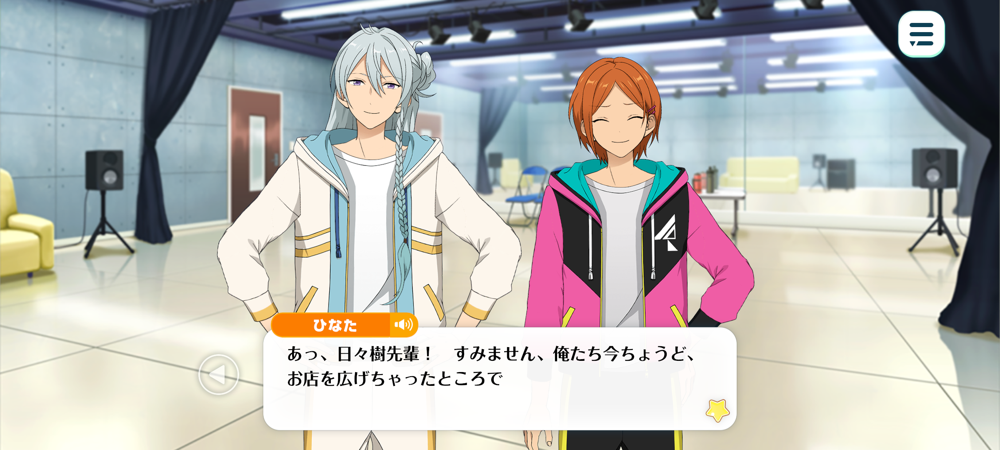
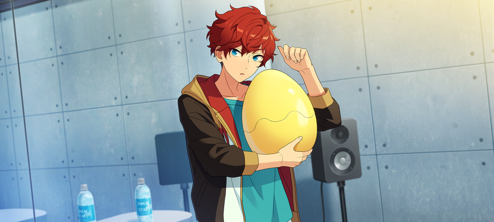
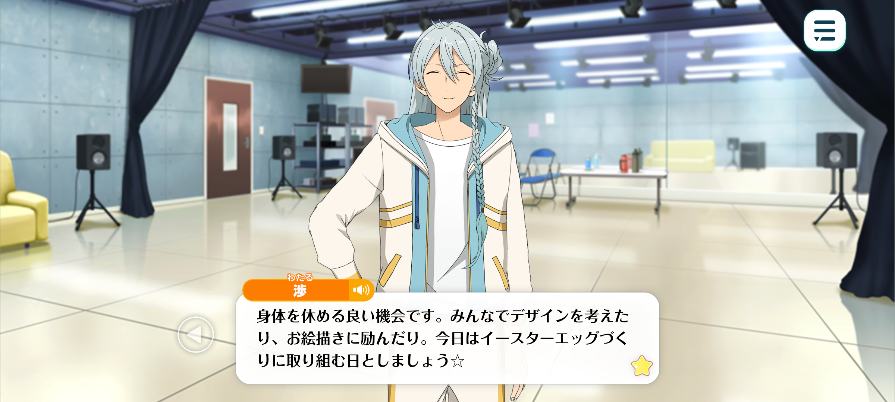
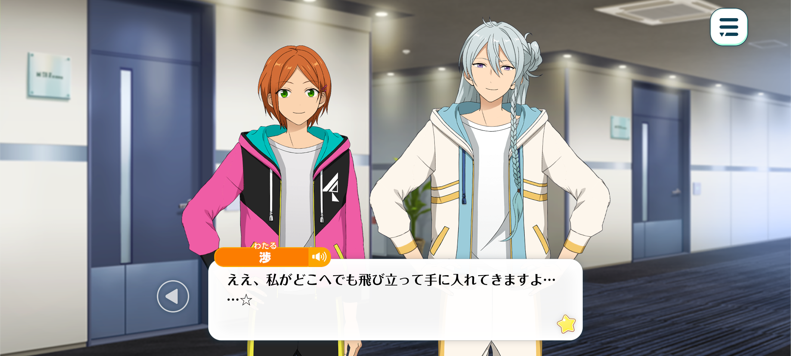

Easter To You
⌒Heartful 3⌒



Wataru: I do apologise for keeping you all waiting— Oya?
Hinata: Ah, Hibiki-senpai! Sorry, we’ve got our things spread out everywhere.
They’re probably in your way. We’ll tidy everything up right away! Just give us a sec…
Wataru: …No, there’s no need.
Hinata: ?
Wataru: Rather, would you mind telling me what you’ve all been doing?
What exactly is that sphere-shaped, or should I say, egg-shaped, thing that Hiiro-kun is holding?

Hiiro: It really is an egg, just as Wataru-senpai said.
When you tap it… it makes a hollow sound. So that means nothing will hatch from it.
I’ve memorised the proper name for it too. This is an Easter egg, right?
Mika: But right now, they’re still plain, so they’re just yer average eggs. We gotta paint ‘em and decorate ‘em first. That’s what’ll make ‘em proper Easter eggs.
I’d been talkin’ about painting eggs together, so I’m glad we’re actually gettin’ to do it ♪
Shinobu: What colours should I use? What sort of pattern should I draw? Ah, I’ve already got so many ideas~ ♪
Wataru: I see, so we’re painting Easter eggs?
So these oval-shaped capsules are part of the Easter festivities, are they?
Hinata: Oh, right! I completely forgot to explain the most important part…
These were sent over by the local government, who are organising the Fes.
We’ll get to paint them as part of the event, and the finished eggs will be exhibited there.
It’ll be really nice for visitors to see something so unique, made by us idols…♪
Shinobu: This capsule is rather large~. If I don’t decorate it properly, it’ll really stand out.
Mika: And it’s not flat like paper, either, so paintin’ on it is gonna be a bit different. Reckon it'll be good for us to make a rough sketch first.
Hiiro: Fumu. I want to make sure it turns out pretty, since everyone will get to see it on display. Just like Kagehira-senpai said—
Ah. Wataru-senpai went to all the trouble of coming here, but he won’t be able to start the lesson if we keep talking.
Mika: Yup, think it’s about time we called it a day. We can figure out what kinda paint to use later ♪
Shinobu: Indeed! Let us put the capsules away in that cardboard box, everyone~
Hibiki-dono, what shall we be doing today? We’ve already finished our warm-ups, so we’re ready to begin whenever you are ♪

Wataru: …There’s no need to put away the capsules.
I imagine everyone’s growing a little tired of doing nothing but lessons, so I thought we’d take the day off today.
It would be a wonderful opportunity to give ourselves a little rest. Besides, you can spend more time coming up with designs and sketching them out ☆
Hinata: …Wait, does this mean you’ve gotten interested in painting the eggs too?
Wataru: Fufufu, that’s right. Everyone was talking about it with such excitement, I simply couldn’t resist joining in.
Hiiro: I thought that if Wataru-senpai said we were starting right away, then we really were. Is it alright if we work in this room? I’m a little worried we might get paint on the floor or something?
Mika: Ngaa~, yer right. We don’t have any supplies here, either. Should we find somewhere else to do it?
Shinobu: If we need somewhere where we can spread out all our art supplies on a sheet, how about the Stage Prop Room? ♪
Hinata: I was thinking that some fabric or ribbons might come in handy for decorating the eggs. Although, I guess we wouldn’t find those in the prop room.
I’m sure there’s some somewhere in the ES building, so I’ll go and grab some ♪
I’d appreciate a hand carrying the boxes, though. Would you mind coming with me, Hibiki-senpai?
Wataru: Of course. I would be delighted to accompany you, Hinata-kun.
Hinata: Great, it’s settled! Everyone, prepare the Prop Room. Hibiki-senpai and I will go fetch the supplies…!

Hinata: Felt-tip pens, colourful construction paper, masking tape, ribbon, some fabric…
I’m pretty sure the Prop Room already has scissors and glue and all that stuff, so this should be everything. If there’s anything else we need, we can just go and get it, right, Hibiki-senpai?
Wataru: Of course. I’d be off to retrieve it in a flash…☆
Hinata: Ahaha. I bet you’d actually hop into a hot-air balloon or a hang glider and fly off to get it. You’d be all like, “it’ll only take a moment in my hot-air balloon ☆.”
Wataru: Fufufu. That would certainly be difficult if the weather weren’t pleasant everyday. But I assure you, I am perfectly capable of walking like everyone else when it comes to something as ordinary as shopping.
And when there are too many bags to carry, I can simply load them into a car and drive home.
Hinata: Eh? You’ve got a driving licence? That’s so cool! You’ve gotta take me for a ride sometime ♪
…Actually, there’s something I wanted to apologise for. About earlier, I mean.
We were all so excited about painting eggs, and you suggested we take a day off so we could get some rest, didn’t you?
Wataru: There’s no need to apologise. That was entirely my decision. You’ve all been putting your bodies through an awful lot with all the special training.
I’ve been wondering what I could do to help before the strain starts to catch up with you.
Though, I suppose I’ve left it a little late now. You’re already exhausted, aren’t you? I should apologise for not giving you a day off sooner.
Hinata: You don’t need to apologise for something like that!
We actually enjoy doing these things with you guiding us, senpai. It’s so much fun…
But what about you, Hibiki-senpai? How do you feel about spending each day with us?
I mean, you agreed to join our shuffle unit when we asked you to, and ever since you’ve done nothing but give and give.
But what do you want to do with the unit for Easter Fes? What do you want us to be…?
Won’t you tell me what’s on your mind right now, Hibiki-senpai?